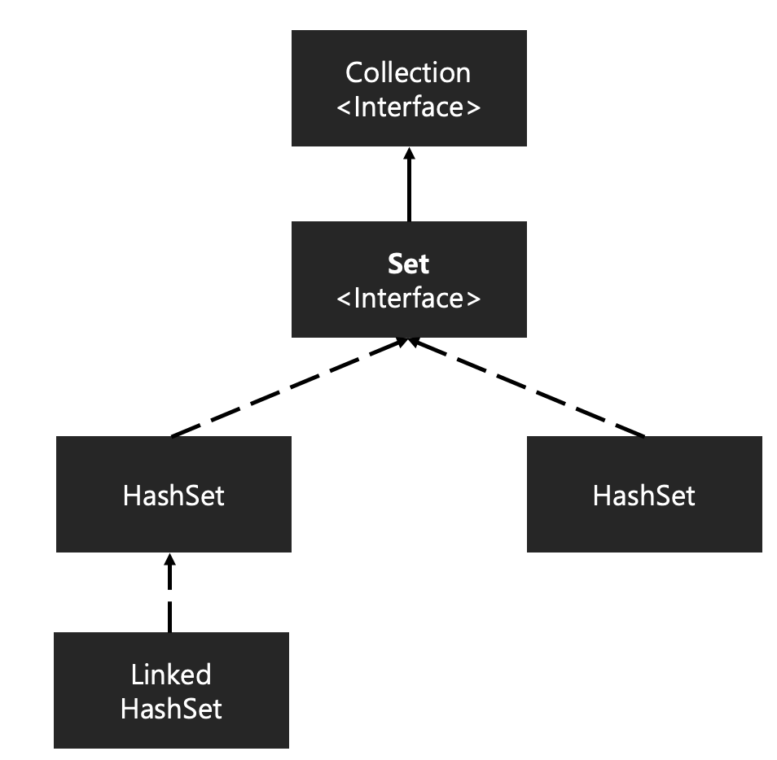

#About Set DataStructure
Set 자료구조는 리스트, 배열과 같은 자료구조와 달리 중복을 허용하지 않으며, 순서를 보장하지 않는 자료구조이다.
Java에서 Set은 Collection Interface 내부에 정의되어 있으며 내부 구현 구조에 따라 HashSet, LinkedHashSet, TreeSet으로 구분된다.

#1 HashSet
HashSet은 내부적으로 Hash Table을 사용하여 데이터의 추가, 검색, 삭제를 O(1)로 연산이 가능한 강력한 성능을 자랑하는 자료구조이다.
데이터의 유일성이 중요할 때 사용한다.
// 1. 출력 순서에 상관 없이 중복을 제거하고 출력해야 하는 경우
Integer[] inputArr = {2, 1, 1, 3, 3, 4};
Set<Integer> hashSet = new HashSet<>(List.of(inputArr));
System.out.println("hashSet = " + hashSet);[OutPut] hashSet = [1, 2, 3, 4]
#2 Linked HashSet
Linked HashSet은 Linked List 자료구조와 Hash Table 기법을 동시에 사용하여 삽입 순서를 보장한다.
따라서 HashSet에 비해서는 약간 무거운 자료구조이다. 데이터의 삽입 순서를 유지해야 하는 경우에 사용한다.
Array vs ArrayList vs LinkedList ?Link
// 2. 중복 값을 제거하며 입력 순서를 유지해야 하는 경우.
Integer[] inputArr = {2, 1, 1, 3, 3, 4};
Set<Integer> linkedHashSet = new LinkedHashSet<>();
linkedHashSet.addAll(Arrays.asList(inputArr));
System.out.println("linkedHashSet = " + linkedHashSet);[OutPut] linkedHashSet = [2, 1, 3, 4]
#3 TreeSet
TreeSet은 이진 탐색 트리를 개선한 레드블랙트리 형태로 구현되어 있는 자료구조이다. 따라서 트리의 특성을 그대로 따라가기에 데이터 삽입, 삭제, 탐색 연산이 O(LogN) 만에 수행된다.
내부적으로 트리 자료구조를 사용하기에 HashSet, LinkedHashSet 과 달리 데이터를 정렬된 순서로 유지할 수 있다.
Comparable 인터페이스를 구현하여 정렬 순서를 커스텀 하는 것 또한 가능하다.
레드블랙트리란?
트리 자료구조가 한쪽으로 치우쳐 균형이 깨지는 현상을 개선한 알고리즘
// 3. 중복 제거와 데이터 순서 유지 -> 데이터 값의 순서로 출력
Integer[] inputArr = {2, 1, 1, 3, 3, 4};
Set<Integer> treeSet = new TreeSet<>();
treeSet.addAll(Arrays.asList(inputArr));
System.out.println("treeSet = " + treeSet);[OutPut] treeSet = [1, 2, 3, 4]
#4 최종 비교
| 자료구조 | 데이터 연산 (삽입, 삭제, 탐색) | 데이터 중복 | 데이터 순서 |
| HashSet | O(1) [최악의 경우 O(N)] | x | x |
| Linked HashSet | O(1) [최악의 경우 O(N)] | x | 삽입 순서 |
| TreeSet | O(LogN) | x | 커스텀 가능 |